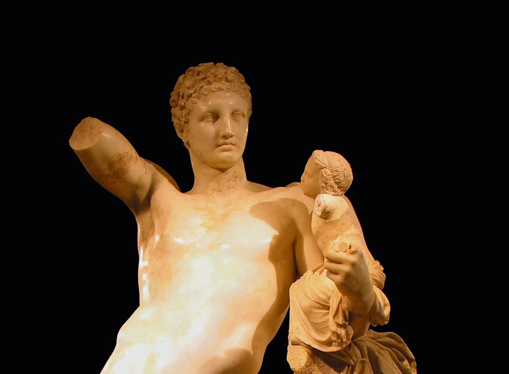
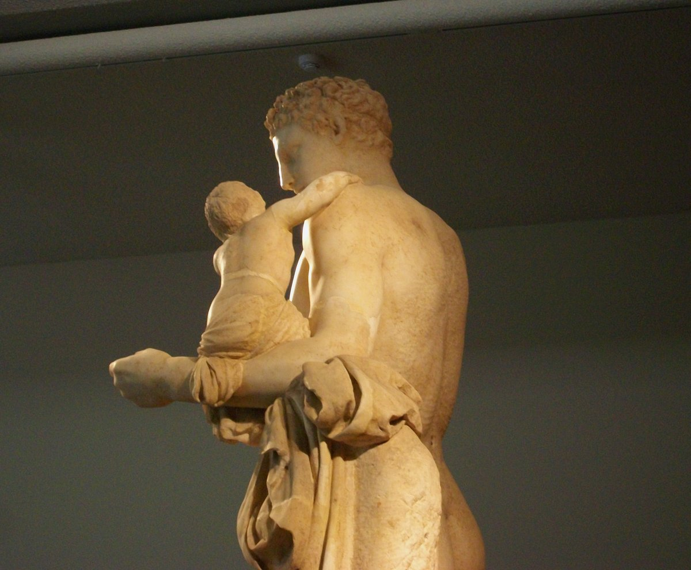

Late Classical
The last phase of Classical Greek art, roughly 400–323 B.C.E. Sculptors kept the Classical ideal body but softened its surfaces, bent its stance into gentler S-curves, and gave it a mood: tenderness, longing, or reverie.
Praxiteles · circa 340 B.C.E. · Archaeological Museum, Olympia


The same statue from the right-rear. The deep cascading drapery and the gentle S-curve of the standing body are both signatures of Praxiteles’s late-classical style.
Praxiteles carved this statue in Greece around 340 B.C.E., about a century after Polykleitos’s Doryphoros. By then, Greek sculptors had turned the Classical ideal inward: bodies softer, emotions subtler, and surfaces melting one into the next.
The subject is a small myth. Hermes, the messenger god, is on his way to deliver the infant Dionysus to the nymphs who will raise him in secret. He pauses, perhaps to tease, and dangles a cluster of grapes just out of the baby’s reach. The baby reaches up; Hermes looks down with a slight, dreamy half-smile.
This is one of the few Greek original sculptures that survives, not a Roman copy. Its surface shows what late-classical marble was meant to feel like. Transitions between light and shadow dissolve into each other without hard edges. Two thousand years later, Leonardo will give that quality a new name: sfumato.
The last phase of Classical Greek art, roughly 400–323 B.C.E. Sculptors kept the Classical ideal body but softened its surfaces, bent its stance into gentler S-curves, and gave it a mood: tenderness, longing, or reverie.
A sculpting approach that lets light and shadow flow across stone without sharp edges. Where Polykleitos’s abdominal muscles were cut as distinct panels, Praxiteles’s surfaces melt from one plane to the next.
The gentle sideways curve of Praxiteles’s standing figures, more pronounced than Polykleitos’s balanced contrapposto. The weight-bearing leg pushes the hip to one side, the opposite shoulder swings up to balance it, and the body traces an elongated S from heel to head.
Praxiteles’s soft surface treatment becomes one of the most copied features of Greek sculpture in later ages. In the Renaissance deck, you will meet Leonardo’s Mona Lisa, where dissolving edges around the mouth and eyes have a name: sfumato, or “like smoke.” You will also meet Michelangelo’s Pietà, which chases the same gentle quality in marble. Every soft Classical revival in European sculpture traces back to what Praxiteles pioneered here.